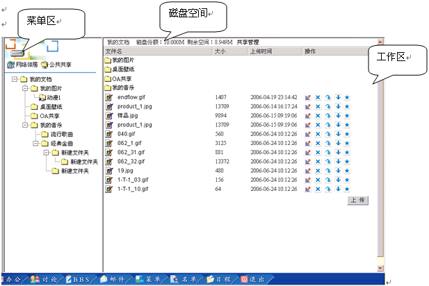
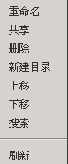
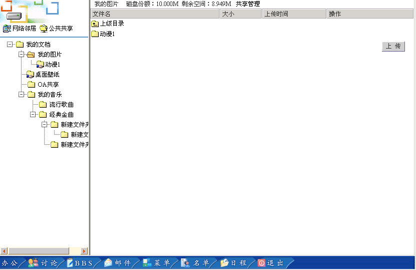
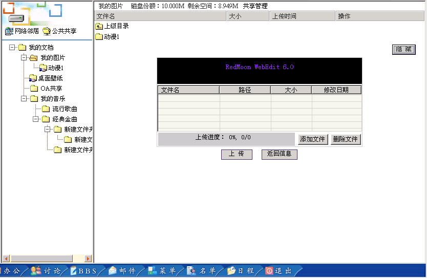
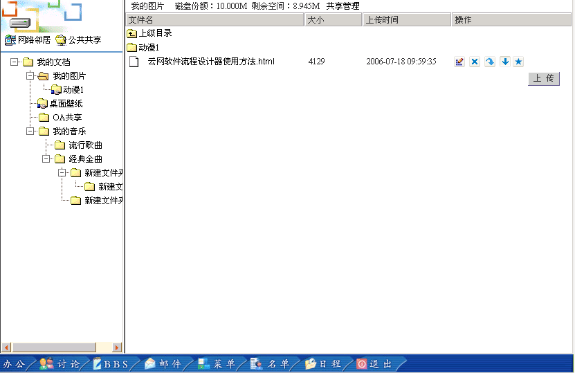
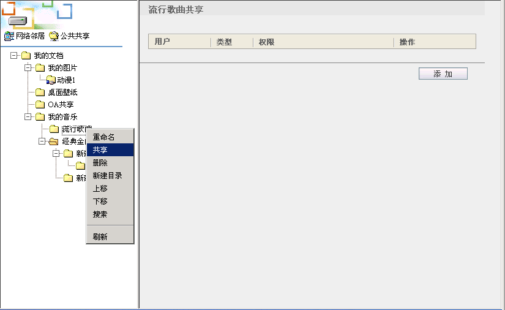
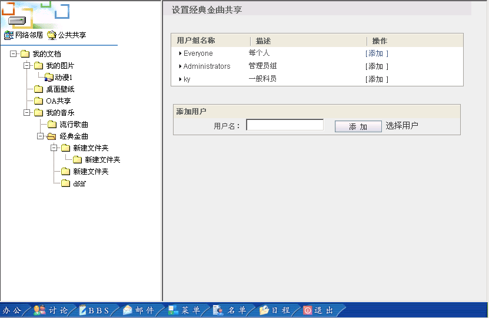
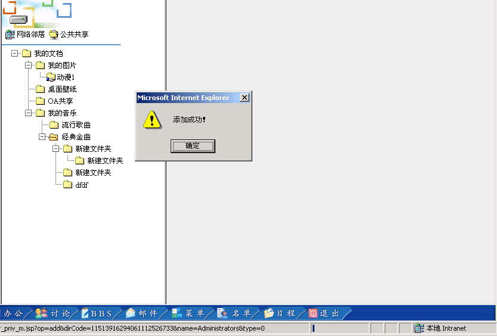
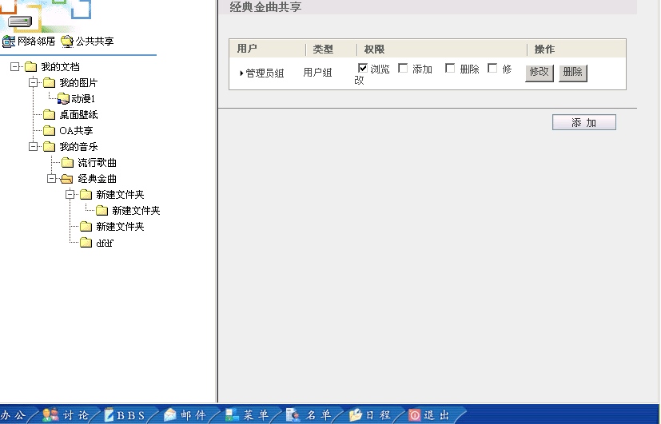

网络硬盘使用方法 |
| 示例图: |
|  |
| 按钮说明： |
| 查看公共共享目录 |
| 查看所选部门共享目录 |
| 菜单区键盘说明: |
| 
改名：修改文件夹名称。 |
使用说明 |
1．文件夹共享下面是上传文件效果图： |
 图：1.1 上传文件  图：1.2上传文件 |
 图：1.3上传文件成功 步骤：选中菜单区中所要添加文件的文件区，单击“上传”按钮。如图1.1所示。然后出现图1.2，点击WebEdit控件中的“添加文件”按钮，然后点击“上传”按钮。点击“完成”上传成功。（注：可上传多个文件） 2.文件操作按钮 改名按钮 (选中文件名然后输入新文件名，点击即可改名。 删除按钮（点击即可删除该文件）。 转移按钮 (点击将此文件转移到其它目录中) 下载按钮（点击将此文件下载到目的计算机中） 发布按钮（点击将此文件发布至全局共享目录中去） 3文件夹操作 3.1文件名改名  图3.2.1 文件夹共享 |
|
图3.2.2 添加文件夹共享  图3.2.3 选择文件夹共享用户 |

|
图3.2.4 文件夹共享添加成功  图3.2.4 文件夹共享添加成功后 3.3取消工享文件夹
|
图3.2.4 文件夹共享添加成功 3.3.2取消共享 |